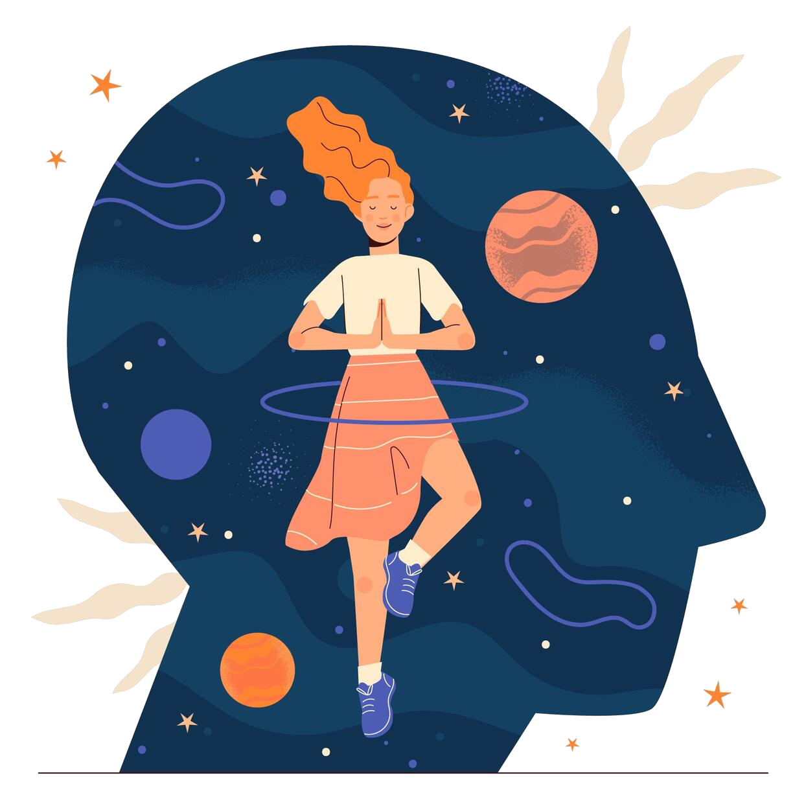

Empower Your Mental Wealth, Live Your Best Life.

Depression is a mental health disorder that affects a person's mood, thoughts, and behaviors.
It is characterized by persistent feelings of sadness, loss of interest or pleasure in activities, and changes in appetite, sleep, and energy levels.
Depression can be caused by a combination of genetic, biological, environmental, and psychological factors.
Some common symptoms of depression include: persistent sad or irritable mood, loss of interest in activities once enjoyed, changes in appetite or weight, sleep disturbances, fatigue.
Anxiety is a mental health condition characterized by excessive worry, fear, and nervousness.
It is a normal human emotion, but when it becomes chronic and interferes with daily life, it may be considered an anxiety disorder.
Anxiety disorders can manifest in various forms, such as generalized anxiety disorder (GAD), social anxiety disorder, panic disorder, and others.
Risk factors for anxiety include genetics, brain chemistry, personality traits, traumatic experiences, and other medical conditions.